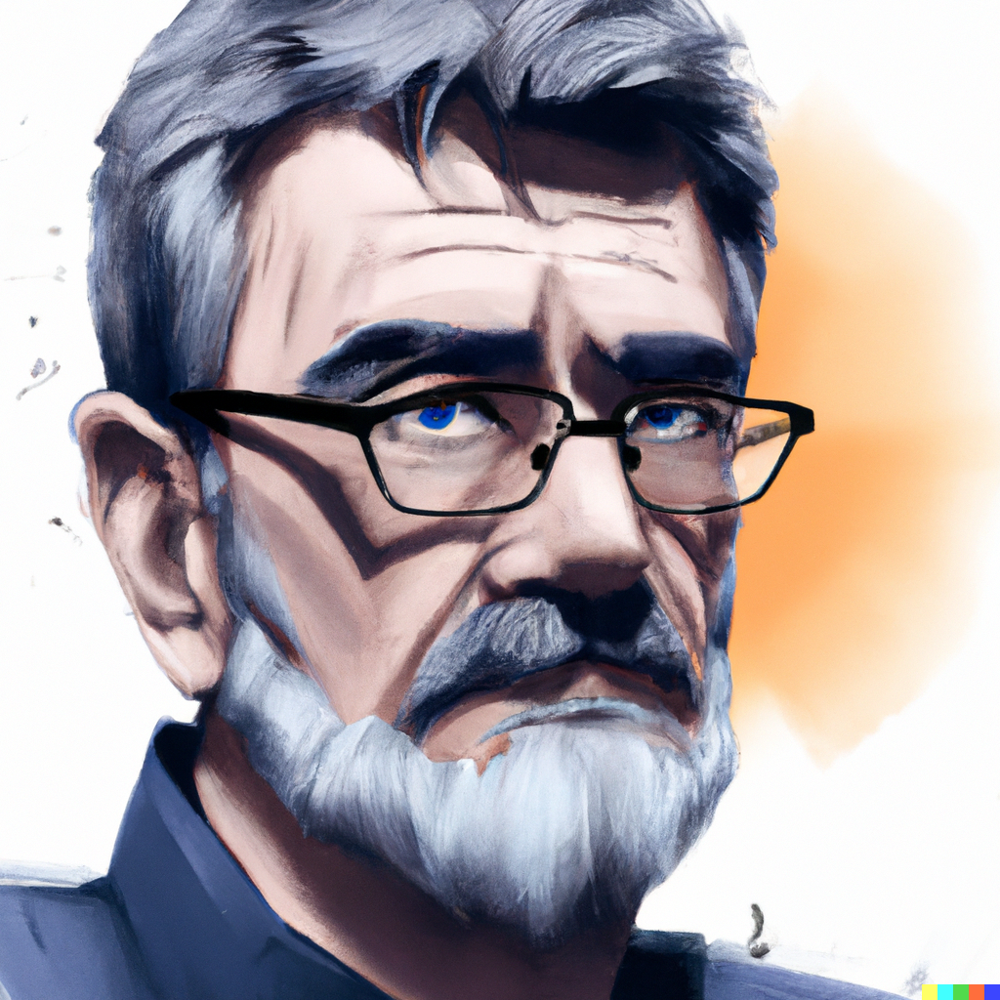
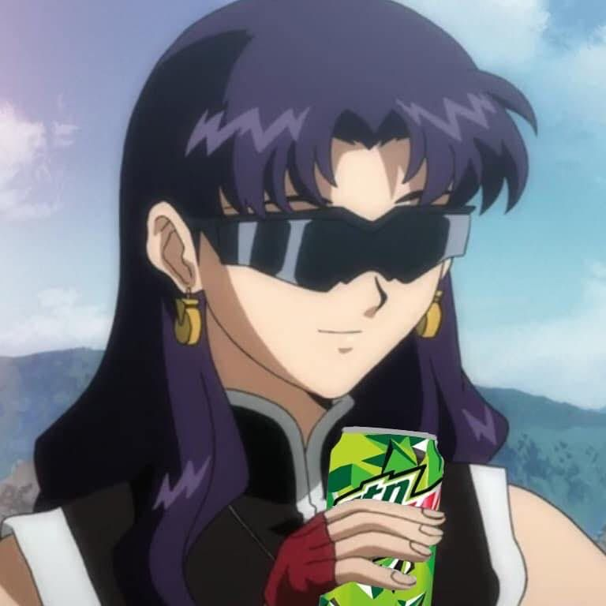

Tokyo-3 Chamber of Commerce

Target Audience
The Tokyo-3 Chamber of Commerce website is designed for a diverse group of individuals and businesses.
Persona: Large Business Manager
 Meet large business representative, Gendo Ikari. He works for a robot research company. As a researcher and business manager in the field of robotics, Gendo would be interested in information about city services and resources that support the growth and development of his business. He would also be interested in networking opportunities and information about upcoming events related to robotics and advanced technology in the city. He would use the website to look for conent that includes information on permits and licenses, networking opportunities, and information about city services and resources that support innovation in the field of robotics.
Gendo Ikari is a large business representative who works for a robot research company. As a researcher and business manager in the field of robotics, Gendo is motivated by the growth and development of his business. He is always looking for ways to improve and expand his company, and is particularly interested in information and resources that can support this goal.
One of the things that Gendo is looking for on the Tokyo-3 Chamber of Commerce website is information about city services and resources that support the growth and development of his business. This might include information about permits and licenses, as well as information about city services and resources that support innovation in the field of robotics. Gendo is also looking for networking opportunities, as he believes that connecting with other professionals in his field can help him to grow his business and learn about new developments in the field.
Additionally, Gendo is looking to attend upcoming events related to robotics and advanced technology in the city. He believes that attending these events can help him to stay current on the latest developments in the field, and can also provide him with valuable networking opportunities.
Persona: Small Business Owner
 The website would also cater to small business owners like Misato Katsuragi. She runs her own restaurant in the city and is looking for information on permits and licenses, networking opportunities, and city services that would support her business.
Our person, Misato Katsuragi, is a small business owner who runs her own restaurant in the city. She is motivated by the desire to grow her business and make it successful. She is looking for information and resources that will help her do that.
One of the things Misato is looking for is information on permits and licenses. She wants to make sure that her business is operating legally and that she has all the necessary documentation in order. She is also looking for networking opportunities, as she wants to connect with other small business owners and learn from their experiences.
In addition to these specific needs, Misato is also looking for city services that will support her business. She wants to know what resources are available to her, such as business development programs or financial assistance. She wants to take advantage of any opportunities that will help her grow and succeed as a small business owner.
Persona: Tourist to Tokyo-3
Additionally, the website is targeted towards potential tourists, such as Ryoji Kaji, who is looking for information about the city's economy and upcoming events in the community and exploring the unique culture and attractions of Tokyo-3 with what the city has to offer.
The person described in this description, Ryoji Kaji, is motivated by the desire to learn about and explore the unique culture and attractions of the city of Tokyo-3. He is specifically interested in gaining information about the city's economy and upcoming events in the community. This suggests that he is likely planning a trip to Tokyo-3 and is looking for information that will help him make the most of his time there.
In terms of what Ryoji Kaji is looking for, it can be inferred that he is looking for a wealth of information about the city. This might include information about popular tourist attractions, cultural events and festivals, and the best places to eat, stay, and shop. Additionally, he may be looking for information about the city's economy, which could help him understand the overall state of the city and what to expect during his visit.
Ryoji Kaji's main goal is to explore and experience the unique culture and attractions of Tokyo-3. He wants to gain a better understanding of the city and what it has to offer. This could include visiting popular tourist sites, experiencing local festivals and events, and immersing himself in the city's culture and way of life.
In terms of his needs, Ryoji Kaji is likely looking for a comprehensive and easily accessible source of information about the city. This might include a website that is easy to navigate and provides a wealth of information about the city's economy, upcoming events, and popular tourist attractions. Additionally, he may be looking for information that is tailored specifically to tourists, such as recommendations for the best places to eat and stay. Overall, Ryoji Kaji's needs are focused on gaining a comprehensive understanding of the city of Tokyo-3 and making the most of his visit.